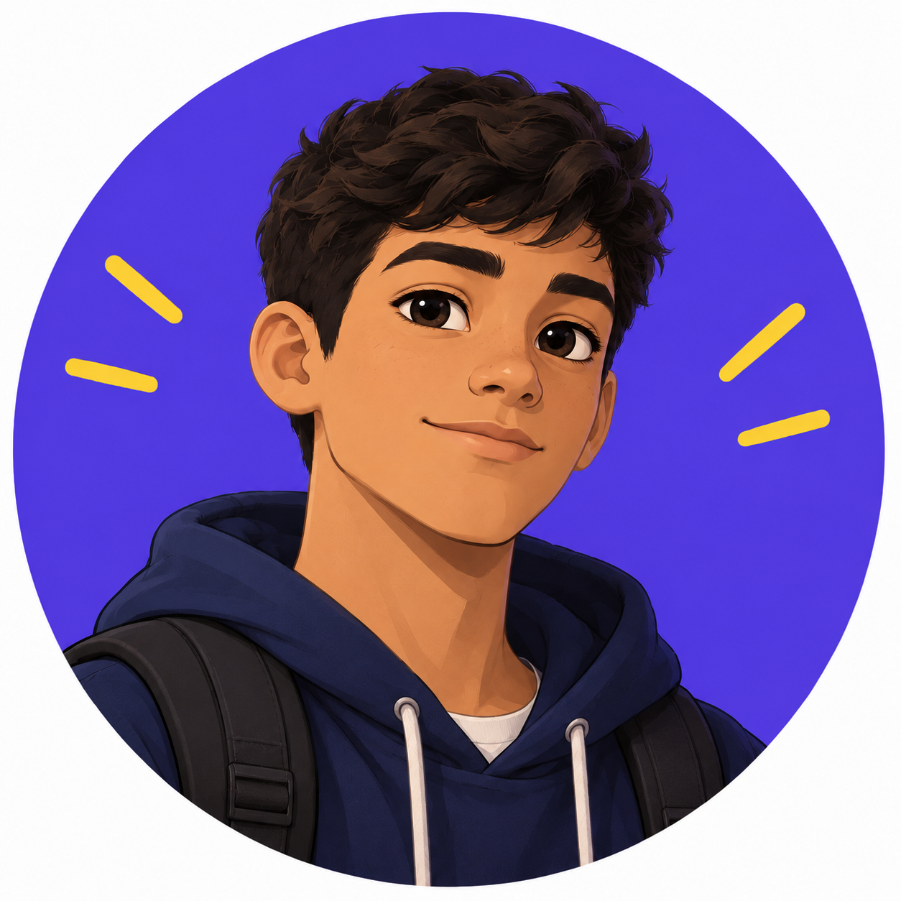
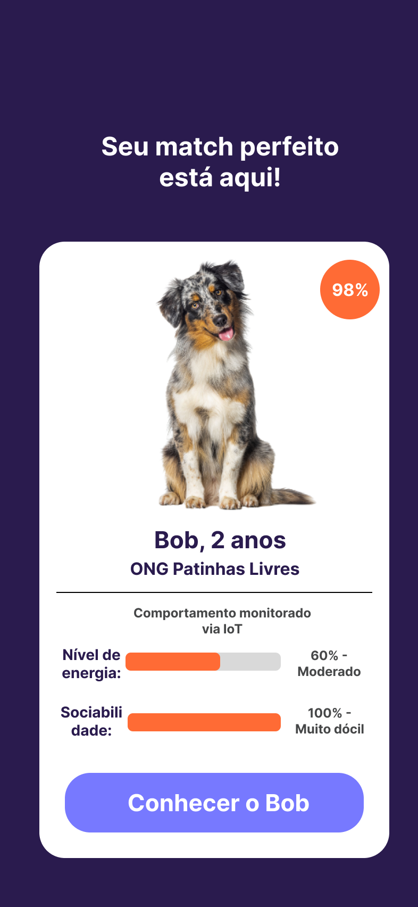
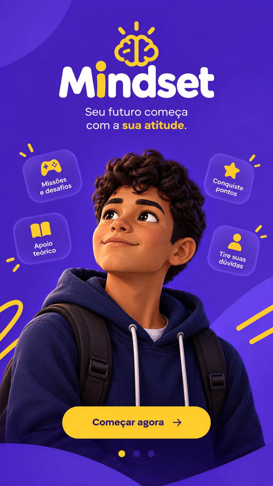

Rafael

Resumo
Me chamo Rafael Fires, tenho 17 anos, moro em São Sebastião do Passé (Ba). Gosto muito de música, esportes e tudo ligado a natureza. Sou estudante de TI no SENAI - Candeias e tenho altas expectativas com esse curso.
Formação
Ao longo da minha trajetória escolar já estudei em três escolas diferentes. Já vivenciei muitas apresentações, como: teatro, feiras de ciências, covers musicais... Atualmente, estou fazendo um curso técnico em informática para a internet no SENAI.
Projetos
Laikidoo

O Laikidoo se trata de uma plataforma para viabilizar a adoção pet, diminuindo o índice de devoluções e abandanos.
Escola Conecta

A Escola Conecta foi uma solução proposta pela empresa fictícia Nexus, criada pela minha equipe. O objetivo foi resolver o problema de comunicação em uma escola com pouco orçamento, na qual ainda permanecia com meios comunicação desatualizados.
Mindset

Foi uma ideia de plataforma para minimizar a evasão escolar no Brasil. Nela, existiria toda uma atmosfera de incentivo escolar, contendo apoio teórico, bem como uma rede de conteúdos gamificados para mostrar aos jovens que aprender também pode ser divertido.
Hobbies
Meus principais hobbies são praticar esporte, desenhar, ouvir música e fazer trilhas na natureza. Também curto aprender coisas novas e me desafiar a ser melhor diariamente.
Referências
Filme
Meu filme preferido é "Spirit: O Corcel Indomável". Nesse filme é abordado temas como: amizade, lealdade, determinação, sacrifícios, liberdade.
Livro
Um livro que eu indicaria seria "A Única Coisa". Fala sobre desenvolvimento pessoal, gerenciamento de tempo e foco. Nessa obra é desmascarada as mentiras que a sociedade insiste em acreditar e que te impedem de alcançar uma vida extraordinária.
Música
A música que não sai da minha playlist é "Believer", de Imagine Dragons. Além de curtir um rock, gosto de músicas que nos incentivam a alcançar nossos sonhos.